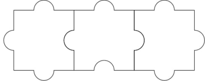
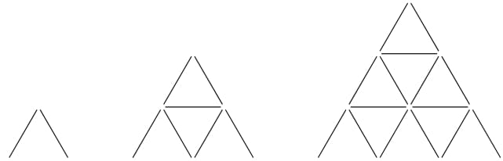

比赛链接
打一半改成unrated了海星
惨 Monogon 惨
有n × m n\times m n × m
问对给定的n n n m m m n × m n\times m n × m
不妨假设n ⩽ m n\leqslant m n ⩽ m
首先当n = 1 n=1 n = 1 n = m = 2 n=m=2 n = m = 2

而如果想拼出n × m , 2 < n ⩽ m n\times m,2<n\leqslant m n × m , 2 < n ⩽ m ( n − 1 ) × m (n-1)\times m ( n − 1 ) × m n × ( m − 1 ) n\times(m-1) n × ( m − 1 )
观察发现, 如果矩形可以拼出, 则每条拼图块的公共边必然为一凹一凸, 可以发现m = 3 m=3 m = 3 n = 3 n=3 n = 3 7 7 7 6 6 6
故可能的情况只有n = 1 n=1 n = 1 n = m = 2 n=m=2 n = m = 2
Show code 1 2 3 4 5 6 7 8 9 10 11 12 13 14 15 16 17 18 19 int main () int _T_; cin >> _T_; while (_T_--) { int n, m; cin >> n >> m; if (n == 1 || m == 1 || (n == 2 && m == 2 )) cout << "YES" << endl ; else cout << "NO" << endl ; } return 0 ; }
输入n n n
图示即为卡牌金字塔高度h = 1 , 2 , 3 h=1,2,3 h = 1 , 2 , 3

易得高度为h h h 1 2 ( 3 h 2 + h ) {1\over2}(3h^2+h) 2 1 ( 3 h 2 + h )
所以直接打个表然后二分查找就好了
其实不用二分也能过, 直接从高到低遍历一遍就行
不需要二分就可以做到单次O ( n ) O(\sqrt n) O ( n ) O ( n ) O(\sqrt{n}) O ( n )
此时的总体复杂度显然是O ( ∑ i = 1 t n i ) O(\sum_{i=1}^t\sqrt{n_i}) O ( ∑ i = 1 t n i )
令N = ∑ i = 1 t n i N=\displaystyle\sum_{i=1}^tn_i N = i = 1 ∑ t n i
∑ i = 1 t n i ⩽ ∑ i = 1 t 1 ⋅ ∑ i = 1 t n i = t N \sum_{i=1}^t\sqrt{n_i}\leqslant\sqrt{\sum_{i=1}^t1\cdot\sum_{i=1}^tn_i}=\sqrt{tN}
i = 1 ∑ t n i ⩽ i = 1 ∑ t 1 ⋅ i = 1 ∑ t n i = t N
所以可以记作O ( t N ) O(\sqrt{tN}) O ( t N )
Show code 1 2 3 4 5 6 7 8 9 10 11 12 13 14 15 16 17 18 19 20 21 22 23 24 25 26 27 28 29 30 31 32 33 34 35 u64 f[N]; int main () for (u64 i = 1 ; i < N; ++i) { f[i] = (3 * i * i + i) / 2 ; } int _T_; cin >> _T_; while (_T_--) { int n; cin >> n; if (n < 2 ) { cout << 0 << endl ; continue ; } int pos = lower_bound(f, f + N, n) - f, cnt = 1 ; while (pos) { if (pos == 0 || f[pos] == n) { cout << cnt << endl ; break ; } n -= f[pos - 1 ]; if (n < 2 ) { cout << cnt << endl ; break ; } ++cnt; pos = lower_bound(f, f + N, n) - f; } } return 0 ; }
给出n n n a 0 , a 1 , . . . , a n − 1 a_0,a_1,...,a_{n-1} a 0 , a 1 , . . . , a n − 1 ∃ x , y ∈ Z , x ≠ y s . t . x + a x mod n = y + a y mod n \exists x,y\in\Bbb{Z}, x\ne y\ s.t.\ x+a_{x\operatorname{mod}n}=y+a_{y\operatorname{mod}n} ∃ x , y ∈ Z , x = y s . t . x + a x m o d n = y + a y m o d n
首先我们可以发现
x = y + k n , k ∈ Z ⟺ x + a x mod n = y + a y mod n + k n x=y+kn,k\in\Bbb{Z}\iff x+a_{x\operatorname{mod}n}=y+a_{y\operatorname{mod}n}+kn x = y + k n , k ∈ Z ⟺ x + a x m o d n = y + a y m o d n + k n x + a x mod n = y + a y mod n ⟸ { x + a x mod n ≡ y + a y mod n ( m o d n ) x ≠ y + k n , k ∈ Z x+a_{x\operatorname{mod}n}=y+a_{y\operatorname{mod}n}\impliedby \begin{cases}
x+a_{x\operatorname{mod}n}\equiv y+a_{y\operatorname{mod}n}\pmod n\\
x\ne y+kn,k\in\Bbb{Z}
\end{cases} x + a x m o d n = y + a y m o d n ⟸ { x + a x m o d n ≡ y + a y m o d n ( m o d n ) x = y + k n , k ∈ Z
所以我们只需在Z n \Bbb{Z}_n Z n
若
∃ x , y ∈ Z n , x ≠ y s . t . x + a x mod n ≡ y + a y mod n ( m o d n ) \exists x,y\in\Bbb{Z}_n, x\ne y\ s.t.\ x+a_{x\operatorname{mod}n}\equiv y+a_{y\operatorname{mod}n}\pmod n
∃ x , y ∈ Z n , x = y s . t . x + a x m o d n ≡ y + a y m o d n ( m o d n )
则
∃ x , y ∈ Z , x ≠ y s . t . x + a x mod n = y + a y mod n \exists x,y\in\Bbb{Z}, x\ne y\ s.t.\ x+a_{x\operatorname{mod}n}=y+a_{y\operatorname{mod}n}
∃ x , y ∈ Z , x = y s . t . x + a x m o d n = y + a y m o d n
单次Θ ( n ) \Theta(n) Θ ( n )
Show code 1 2 3 4 5 6 7 8 9 10 11 12 13 14 15 16 17 18 19 20 21 22 23 24 25 26 27 28 29 30 31 32 int a[N];int main () int _T_; cin >> _T_; while (_T_--) { set <int > s; int n; cin >> n; if (n == 1 ) { cin >> n; cout << "YES" << endl ; continue ; } for (int i = 0 ; i < n; ++i) { cin >> a[i]; } for (int i = 0 ; i < n; ++i) { if (s.count(((i + a[i % n]) % n + n) % n)) { cout << "NO" << endl ; goto __END; } s.insert(((i + a[i % n]) % n + n) % n); } cout << "YES" << endl ; __END:; } return 0 ; }
有个n × m n\times m n × m
每行和每列都至少放一个S极
N极能经过所有黑格
N极不能有经过白格的可能
问对给定的地图是否存在放置单极磁铁的方案, 如果有的话一共可以放几个N极
如果有方案的话, N极个数显然为黑格连通块个数
如果在某行/列出现两个黑格中间有白格的情况, 则中间的白格有可能被经过, 否则该行/列没有S极
如果某一行/列全白, 则必有某一列/行全白, 从而S极可置于交点处. 否则白格有可能被经过, 或该行/列没有S极
所以只需要先遍历看看是否存在上述情况, 如果没有再求个连通块个数就行了
Θ ( n m ) \Theta(nm) Θ ( n m )
Show code 1 2 3 4 5 6 7 8 9 10 11 12 13 14 15 16 17 18 19 20 21 22 23 24 25 26 27 28 29 30 31 32 33 34 35 36 37 38 39 40 41 42 43 44 45 46 47 48 49 50 51 52 53 54 55 56 57 58 59 60 61 62 63 64 65 66 67 68 69 70 71 72 73 74 75 76 77 78 79 80 81 const int d[][2 ] = {{0 , 1 }, {1 , 0 }, {0 , -1 }, {-1 , 0 }};char _[N][N];bool vis[N][N];int n, m;bool dfs (int x, int y) if (vis[x][y] || _[x][y] == '.' ) return 0 ; vis[x][y] = 1 ; for (const int * i : d) { int now_x = x + *i, now_y = y + *(i + 1 ); if (now_x <= 0 || now_y <= 0 || now_x > n || now_y > m) continue ; dfs(now_x, now_y); } return 1 ; } int main () scanf ("%d %d\n" , &n, &m); _for(i, 1 , n) { fgets(_[i] + 1 , m + 1 , stdin ); if (_[i][1 ] == 10 ) fgets(_[i] + 1 , m + 1 , stdin ); } int while_line = 0 , while_col = 0 ; for (int i = 1 , f; i <= n; ++i) { f = 1 ; _for(j, 1 , m) if (_[i][j] == '#' ) f = 0 ; while_line += f; } for (int i = 1 , f; i <= m; ++i) { f = 1 ; _for(j, 1 , n) if (_[j][i] == '#' ) f = 0 ; while_col += f; } if ((while_line == 0 ) ^ (while_col == 0 )) { puts ("-1" ); return 0 ; } for (int i = 1 , l, r; i <= n; ++i) { l = r = 0 ; _for(j, 1 , m) if (_[i][j] == '#' ) { l = j; break ; } _fd(j, m, 1 ) if (_[i][j] == '#' ) { r = j; break ; } _for(j, l, r) if (_[i][j] == '.' ) { puts ("-1" ); return 0 ; } } for (int i = 1 , l, r; i <= m; ++i) { l = r = 0 ; _for(j, 1 , n) if (_[j][i] == '#' ) { l = j; break ; } _fd(j, n, 1 ) if (_[j][i] == '#' ) { r = j; break ; } _for(j, l, r) if (_[j][i] == '.' ) { puts ("-1" ); return 0 ; } } int cnt = 0 ; _for(i, 1 , n) _for(j, 1 , m) cnt += dfs(i, j); printf ("%d\n" , cnt); return 0 ; }